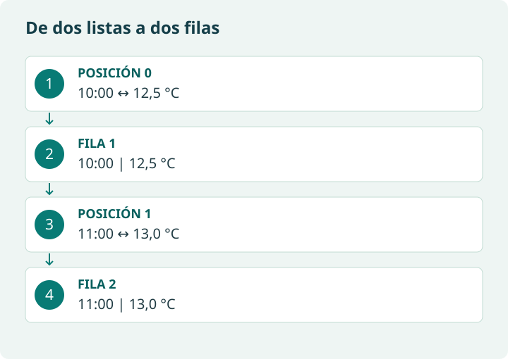

Práctica guiada 1 · leer y filtrar un CSV
Este ejemplo es autónomo y usa datos ficticios incluidos, por lo que puedes anticipar la salida sin depender de una descarga. En el ejemplo original conservado más abajo encontrarás la URL del CSV externo; leer clientes.csv solo funciona si antes has descargado o subido ese archivo.
import pandas as pd
from io import StringIO
csv = """nombre,edad,ciudad
Ana,35,Madrid
Luis,30,Madrid
Eva,42,Santander
"""
df = pd.read_csv(StringIO(csv))
mascara = (df["ciudad"] == "Madrid") & (df["edad"] > 30)
resultado = df.loc[mascara, ["nombre", "edad", "ciudad"]]
print(resultado.to_string(index=False))
assert resultado["nombre"].tolist() == ["Ana"]Cada comparación genera una serie de verdaderos y falsos. & combina condiciones por fila; usa paréntesis y no el and de dos valores escalares. La salida contiene Ana, 35, Madrid. Para utilizar el fichero remoto original, asigna su URL a una variable y pásala a pd.read_csv(url); comprueba sus columnas antes de filtrar.
Cambia > por >=. ¿Qué cambia?
Entran Ana y Luis. Has cambiado el requisito de edad, por lo que debes cambiar también la descripción del resultado.
En el CSV remoto original consultado hay 20 filas; ocho cumplen Madrid y edad mayor de 30. El resultado Ana corresponde únicamente al microejemplo ficticio anterior. Contrasta tus resultados con la fuente que hayas utilizado y registra cuándo la consultaste.
Práctica guiada 2 · JSON antes de la conexión real
Los siguientes datos son simulados y contienen solo dos horas. No son el tiempo actual ni el pronóstico completo de un día. Primero comprende cómo se recorre el diccionario; después sustituye la entrada por una respuesta real.

import pandas as pd
datos = {
"hourly_units": {"temperature_2m": "°C"},
"hourly": {"time": ["2024-02-01T10:00", "2024-02-01T11:00"],
"temperature_2m": [12.5, 13.0]}
}
horas = datos["hourly"]["time"]
valores = datos["hourly"]["temperature_2m"]
assert len(horas) == len(valores) and len(horas) > 0
assert datos["hourly_units"]["temperature_2m"] == "°C"
tabla = pd.DataFrame({"hora_local": pd.to_datetime(horas), "temperatura_c": valores})
assert tabla["temperatura_c"].notna().all()
print(tabla)
print("Máxima:", tabla["temperatura_c"].max())La primera fila es 10:00 → 12,5 °C y la segunda 11:00 → 13 °C. La máxima de este fragmento es 13 °C. Esta conversión no es una unión por clave: empareja posiciones de dos listas del mismo bloque horario.
Para consultar la API real, ejecuta la petición de 3.1 y usa su variable datos; ejecuta después la transformación desde horas = ..., sin volver a asignar el JSON simulado. Anota ubicación, fecha de consulta, unidades y zona horaria. Declara timezone="Europe/Madrid" para delimitar el día local. Las marcas locales sin desplazamiento no identifican por sí solas instantes UTC, especialmente en cambios de hora: para una cronología inequívoca usa UTC o marcas Unix y convierte explícitamente.
Un pronóstico procede de un modelo; no es una medición observada. No fijes una temperatura esperada para la API real, porque cambia. Comprueba longitudes, tipos, ausentes y metadatos en vez de suponer siempre 24 filas.
Ampliación · cliente Open-Meteo, caché y reintentos
El ejemplo original de esta página utiliza openmeteo_requests. Ese cliente expone objetos y arrays a partir de FlatBuffers; no se recorre igual que un diccionario JSON de requests. La API admite JSON, pero response.Hourly() pertenece al cliente especializado. Por eso esta ruta queda como ampliación.
Caché significa reutilizar una respuesta guardada durante un tiempo; acelera consultas repetidas, pero puede devolver un pronóstico anterior. Reintentar puede ayudar ante fallos transitorios, pero no corrige parámetros incorrectos ni garantiza éxito. Limita los intentos y registra si usaste caché.
El fragmento original presupone que has instalado e importado las bibliotecas, creado el cliente y definido url. No es una celda autónoma. Sigue el cuaderno original enlazado para esa ruta y comprueba qué versión utiliza. Al construir el índice temporal con inicio, fin e intervalo, el límite final suele ser exclusivo: contrasta siempre su longitud con el array recibido.
Consulta: Cliente Python oficial de Open-Meteo.
Práctica guiada 3 · del HTML a productos
Inspecciona un producto antes del bucle: article agrupa el registro, h2 contiene el nombre y .precio selecciona la clase precio. Busca dentro de cada producto para no mezclar el precio de otro registro. Este HTML local está preparado para aprender, no requiere acceder a tiendas reales.
from bs4 import BeautifulSoup
from decimal import Decimal
import pandas as pd
documento = """<article class="producto"><h2>Cuaderno</h2><span class="precio">3,50 €</span></article>
<article class="producto"><h2>Lápiz</h2><span class="precio">1,20 €</span></article>
<article class="producto"><h2>Carpeta</h2></article>"""
soup = BeautifulSoup(documento, "html.parser")
filas = []
for producto in soup.select("article.producto"):
nombre = producto.select_one("h2")
precio = producto.select_one(".precio")
texto = precio.get_text(strip=True) if precio else None
importe = Decimal(texto.replace("€", "").strip().replace(",", ".")) if texto else None
filas.append({"producto": nombre.get_text(strip=True) if nombre else None,
"precio_eur": importe, "incidencia": "sin precio" if precio is None else ""})
productos = pd.DataFrame(filas)
print(productos)
assert len(productos) == 3
assert productos["precio_eur"].isna().sum() == 1Se obtienen Cuaderno → 3,50 €, Lápiz → 1,20 € y Carpeta → ausente. La carpeta se conserva con una incidencia; no se convierte en un producto gratuito. La conversión supone euros, coma decimal y ausencia de separadores de millares: un valor como «1.299,95 €» requiere otra regla explícita. Decimal evita el redondeo binario de los importes en este ejemplo.
Consulta: Beautiful Soup: selectores y extracción de texto.
¿Por qué no recibimos siempre todo lo que vemos en el navegador?
Una página puede incorporar datos mediante JavaScript después de cargar el HTML. requests descarga la respuesta HTTP y BeautifulSoup la analiza; no ejecutan ese JavaScript. Busca una API documentada o estudia una herramienta de navegador cuando esté permitido.
Práctica guiada 4 · la misma pregunta con SQL
Creamos una base temporal en memoria con tres clientes ficticios. Se cerrará al terminar el bloque; no afecta a ninguna base del centro. La pregunta es la misma que en pandas.
import sqlite3
import pandas as pd
clientes = pd.DataFrame({"nombre": ["Ana", "Luis", "Eva"],
"edad": [35, 30, 42], "ciudad": ["Madrid", "Madrid", "Santander"]})
with sqlite3.connect(":memory:") as conexion:
clientes.to_sql("clientes", conexion, index=False)
consulta = "SELECT nombre, edad FROM clientes WHERE ciudad = ? AND edad > ? ORDER BY nombre"
resultado_sql = pd.read_sql_query(consulta, conexion, params=("Madrid", 30))
print(resultado_sql)
assert resultado_sql["nombre"].tolist() == ["Ana"]SELECT elige columnas, FROM indica la tabla, WHERE filtra y ORDER BY ordena. Los signos ? reciben valores separados de la consulta; no construyas SQL concatenando entradas del usuario. La salida vuelve a ser Ana, 35. Para buscar ausentes en SQL se utiliza IS NULL, no = NULL.
¿La consulta original por ciudad exige tener más de 30 años?
No. La consulta original solo filtra Madrid. El ejemplo guiado añade AND edad > 30 para responder exactamente a la pregunta del CSV.
Material de referencia original
Veamos varios ejemplos sencillos para relacionar teoría y práctica.
Ejemplo 1: Extracción desde un CSV (datos estructurados)
- Tenemos un fichero CSV con una lista de clientes:
https://raw.githubusercontent.com/josedavidmi/iabd-sbd/refs/heads/main/clientes.csv- Columnas: nombre, edad, ciudad.
- Nuestro objetivo es obtener solo los clientes de Madrid que tengan más de 30 años.
En Python (usando Pandas) podríamos:
- Usar df = pd.read_csv('clientes.csv') para cargar los datos en un DataFrame (una tabla).
- Aplicar un filtro encadenado con la lógica:
df_filtrado = df[(df['ciudad'] == 'Madrid') & (df['edad'] > 30)] - El resultado (df_filtrado) es una tabla con solo los clientes que cumplen esas condiciones.
Hemos realizado una extracción de información filtrando un conjunto de datos más grande, lo que nos deja la información lista para el análisis.
Solución: https://colab.research.google.com/drive/1CPaRcZNcPMXLAwHdfv6KEuQpBUz1G1j_?usp=sharing
Ejemplo 2 original: cliente especializado de Open-Meteo (ampliación)
- Queremos obtener el pronóstico de temperatura por hora para el día actual en una ubicación específica (Castro Urdiales), y transformar los datos semiestructurados (JSON) de la API en una tabla (DataFrame) limpia y lista para el análisis.
Solución en Python (Integración API + Pandas)
La API de Open-Meteo nos proporciona los datos en un formato optimizado, donde las variables (temperaturas) y las series de tiempo están separadas. El proceso de extracción consiste en unir estos datos y meterlos en un DataFrame de Pandas.
- Configuración del Cliente de API: Se usan librerías como requests_cache y retry_requests para configurar el cliente de la API (openmeteo) con una capa de caché (para velocidad) y reintento (para fiabilidad), en lugar de una simple petición.
- Petición a la API (Extracción): Se define la URL y los parámetros de la consulta (coordenadas de Castro Urdiales y la variable temperature_2m). # Definición de la consulta
params = {
"latitude": 43.3828,
"longitude": -3.2204,
"hourly": "temperature_2m", # Variable solicitada
"forecast_days": 1,
}
# Llamada a la API
responses = openmeteo.weather_api(url, params=params) - Procesamiento y Transformación (Data Wrangling):
- La respuesta de la API contiene la serie de tiempo (marca de inicio, fin e intervalo) por un lado, y los valores de temperatura (como un array de números) por otro.
- Usamos Pandas (pd.date_range) para generar correctamente la columna de fechas/horas a partir de la serie de tiempo.
- Finalmente, unimos esta columna de tiempo con el array de temperaturas para crear el DataFrame final (hourly_dataframe).
El resultado es una tabla con dos columnas: date y temperature_2m, perfecta para el análisis posterior.

Conceptos Reforzados
- API y representación: la ruta básica recibe JSON; el cliente especializado de este ejemplo utiliza FlatBuffers. La documentación describe el esquema esperado, pero debemos comprobar la respuesta.
- Transformación Obligatoria: En este caso, la extracción de los datos del objeto response y su transformación en un DataFrame (pd.DataFrame) son pasos obligatorios para hacerlos utilizables y analizables.
- Fiabilidad: El uso de caché y reintento muestra una práctica profesional en la extracción de datos: priorizar la velocidad y la tolerancia a fallos.
Solución: https://colab.research.google.com/drive/13w9YOpfMhjh49lAb3UY2MOpfw_UVrA1H?usp=sharing
Ejemplo 3: Scraping de una web (HTML y contenido textual)
Queremos conocer los precios de una lista de productos en una tienda online.
- Accedemos a la página web de la tienda.
- Un programa de scraping lee el HTML de la página.
- Identificamos dentro del código:
- el nombre del producto,
- el precio.
- Guardamos esa información en una tabla (por ejemplo, CSV o Excel) con columnas:
- producto, precio.
Más adelante podemos:
- Comparar precios entre varias tiendas.
- Analizar subidas y bajadas de precio.